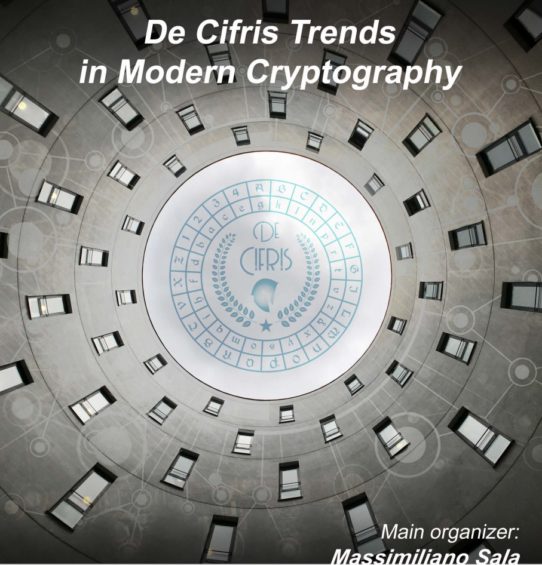

La ricca attività di ricerca svolta all’interno della comunità crittografica Italiana, sia nel campo accademico, sia nel mondo del lavoro e dell'impresa, in questa occasione si completa di un'intensa serie di lezioni ed eventi seminariali. Il complesso di interventi, coordinato dall’università di Trento, coinvolge i docenti di ben 20 Università. Questo corso fornisce un'introduzione ad alcuni aspetti recenti della crittografia, come la crittografia post-quantum e la crittografia su cloud.
Il corso è utile a chiunque abbia familiarità con la crittografia standard e il suo background matematico, tra cui: dottorandi, laureati , professionisti che lavorano per aziende o settore pubblico. In particolare il corso è adatto a studenti di laurea magistrale con speciale interesse per la crittografia.
Massimiliano Sala e Marco Calderini.
Marco Baldi (UNIVPM Ancona), Stefano Barbero (POLITO Torino), Andrea Basso (University of Birmingham), Laura Capuano (UNIRM3 Roma), Michela Ceria (POLIBA Bari), Roberto Civino (UNIVAQ L'Aquila), Mario Di Raimondo (UNICT Catania), Annamaria Iezzi (UNINA Napoli), Roberto La Scala (UNIBA Bari), Massimo Lauria (UNIRM Roma), Riccardo Longo (UNITN Trento), Carla Mascia (UNITN Trento), Nadir Murru (UNITN Trento), Marco Pedicini (UNIRM3 Roma), Giordano Santilli (UNITN Trento), Lea Terracini (UNITO Torino), Marco Timpanella (UNIPG Perugia), Irene Villa (UNITN Trento), Andrea Visconti (UNIMI Milano).
Inglese.
Lezioni tramite Zoom.
20 lezioni da 25 minuti l'una dal 02/05/2022 al 27/05/2022, inoltre alcuni seminari saranno disponibili ai partecipanti del corso.
Il corso può essere frequentato da chiunque si iscriva e ne paghi la quota, fino ad un massimo di 300 (trecento) iscritti. La tariffa standard è di 200 euro, tuttavia:
Per ogni informazione relativa all'iscrizione contattare la dott.ssa Chiara Brollo (chiara.brollo@unitn.it). Per informazioni sulla parte scientifica, contattare il dott. Marco Calderini (marco.calderini@unitn.it).
Per iscriversi al corso e pagare la relativa quota facciamo riferimento al seguente form.
| Data | Titolo | Argomenti | Docenti |
|---|---|---|---|
|
2 Maggio ore 15:00 |
Course introduction (Video) |
|
Massimiliano Sala Marco Calderini (UNITN) |
|
3 Maggio ore 15:00 |
Lattices mod 1 (Video) |
Linear algebra over lattices:
|
Lea Terracini (UNITO) |
|
4 Maggio ore 17:00 |
Lattices mod 2 (Video) |
Determinant:
|
Giordano Santilli (UNITN) |
|
5 Maggio ore 15:00 |
Problems over lattices (Video) |
|
Stefano Barbero (POLITO) |
|
6 Maggio ore 16:00 |
Complexity of the problems for lattices (Video) |
|
Massimo Lauria (Roma Sapienza) |
|
9 Maggio ore 18:00 |
NTRU encryption (Video) |
|
Nadir Murru (UNITN) |
|
10 Maggio ore 15:00 |
Attacks to NTRU (Video) |
|
Andrea Visconti (UNIMI) |
|
11 Maggio ore 15:00 |
LWE (Video) |
|
Roberto Civino (UNIVAQ) |
|
12 Maggio ore 17:00 |
Crystals & Saber (Video) |
|
Andrea Basso (University of Birmingham) |
|
13 Maggio ore 15:00 |
Problems on codes (Video) |
|
Marco Timpanella (UNIPG) |
|
16 Maggio ore 15:00 |
Code-based cryptography (Video) |
|
Marco Baldi (UNIVPM) |
|
17 Maggio ore 15:00 |
Foundations of multivariate crypto (Video) |
|
Michela Ceria (POLIBA) |
|
18 Maggio ore 16:00 |
Rainbow digital signature (Video) |
|
Roberto La Scala (UNIBA) |
|
19 Maggio ore 17:00 |
ABE-paring (Video) |
|
Laura Capuano (ROMA3) |
|
20 Maggio ore 15:00 |
ABE-IBE (Video) |
|
Annamaria Iezzi (UNINA) |
|
23 Maggio ore 15:00 |
Ciphertext-policy ABE (Video) |
|
Marco Pedicini (ROMA3) |
|
24 Maggio ore 15:00 |
Key-policy ABE (Video) |
|
Riccardo Longo (UNITN) |
|
25 Maggio ore 15:00 |
FE I (Video) |
|
Irene Villa (UNITN) |
|
26 Maggio ore 15:00 |
FE II (Video) |
|
Carla Mascia (UNITN) |
|
27 Maggio ore 15:00 |
Secure multi-party computation (Video) |
|
Mario Di Raimondo (UNICT) |
| Docente | Titolo | Data |
|---|---|---|
| Daniele Taufer (CISPA Helmholtz Center for Information Security) |
“Point groups of elliptic curves over structured rings and their cryptographic application” | 6 Maggio 17:00 |
| Antonio Tortora (UNICAMPANIA) |
“An introduction to fully homomorphic encryption” | 11 Maggio 16:00 |
| Alessio Caminata (UNIGE) |
"Solving multivariate polynomial systems with Gröbner bases" | 12 Maggio 10:00 |
| Carmine Monetta (UNISA) |
“Group-based cryptography: the choice of a good platform” | 16 Maggio ore 16:30 |
| Francesca Mantese (UNIVR) |
"Leavitt path algebras and interplay with cryptography and coding theory" | 18 Maggio 11:00 |
| Giulio Codogni (ROMA 2) |
"A quick overview of isogeny graphs and isogeny based cryptography" | 25 Maggio ore 11:00 |
| Giancarlo Rinaldo (UNIME) |
"GeMSS: a post-quantum digital signature" | 30 Maggio ore 15:00 |
| Alessandro Barenghi (POLIMI) |
“Secure realization of modern cryptographic primitives” | 31 Maggio ore 15:00 |
La seconda sessione per l’esame di trends si tiene il 16 Dicembre alle ore 10. Il link zoom verrà comunicato in seguito.